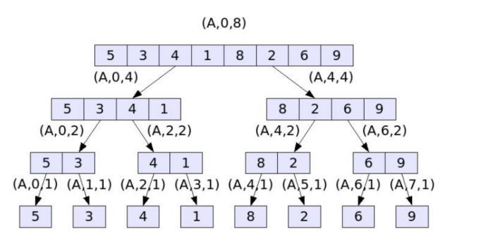
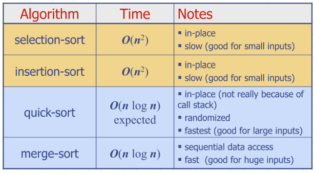

Tutorial 2
Adgenda
- Recursion
- Binary Search
Recursion

One recrusion call to deal with LHS, one to deal with RHS
Requires:
- Base case
- Recursive case
Analysing recursive functions
- Count the operations in a single recursive step
- Express the algorithm as a mathematical recurrence
- Compute a bound for the recurrence by expanding the recursive calls or drawing the recursion tree.
- Will try with both methods
Selection sort example:
if n > 1 then
maxindex <- 0 # O(1)
for i <- 1 to n-1, do
if A[i] > A[maxIndex] then #o(4n)
maxindex <- i
swap(A[maxIndex], A[n-1]) #O(1)
Use the fact that to conclude is (O(n^{2}))
Binary Search Summary
- This is not a binary recursion type, because we will only execute one of the recursive calls.
- Run time:
Sorting - Selection sort
- In place sorting - does not require any additional memory space
- Run time:
How it works:
- Iterate over array from start ot end
- Swap the current element with the smallest element to our right
Insertion sort
- Also in place sorting - does not require any additional memory space
- Also has run time of
How it works:
- Iterate over array from start to end
- Compare that element with all elements to the left (previously seen/sorted)
- Insert that element in the correct location
procedure insertionSort(A: list of sortable items)
for i = 1 to length(A) - 1 do
currentElement = A[i]
j = i - 1
while j >= 0 and A[j] > currentElement do
A[j + 1] = A[j]
j = j - 1
A[j + 1] = currentElement
end for
end procedure
Merge sort
- Run time:
- Split by half each time in first step, no sorting in this process
Quick sort
- randomly select a pivot
- have all elements on LHS, and on RHS
- keep splitting with random pivot
- sort and combine like in merge-sort
Run time:
- can have worst time of due to the worst case pivot
- Expected case:
- Quick sort can be implemented in place

Tutorial sheet
Questions 1, 2, 6.
Question 1
Question 2:
- One primitive operations to print from 0 to 9
- Two primitive operations to print from 10 -to 99
- Three primitive operations to print from 100 to 999...
- this is equivalent to
- Run time:
Question 3:
- grows in time
Question 6
- See solutions, uses geometric sequences and log rule .
Question 9
- In the worst case, have to check all of the elements.
for x in range (A, length)
a = A[x]
b = B[x]
Similar process to Binary search. Have A, B, and x as input
for j in range (A, length)
if BinarySearch(sortedB, A[j] - x)
return true #This is done in log n time
return false
Run time: $n(\log n + \log n) = 2n(\log n) = O(n \log n)